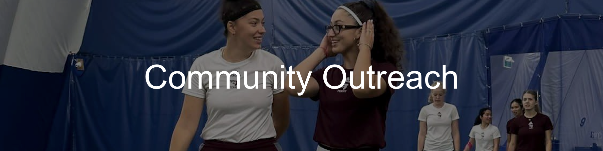

Capital Kids Tennis
Players among all of our the divisions from the University of Ottawa Tennis Club volunteer as coaches across Ottawa to support Capital Kids. We aid as much as we can in order to promote the sport of tennis and help make tennis more accessible to kids and teens interested in playing.
Capital Kids is a recreational community outreach program, aimed at introducing tennis to children and youth. It was started in 2014 with a three-year Trillium Foundation Seed Grant and delivered between 2014-2016 in partnership with the Ontario Tennis Association (OTA), National Capital Tennis Association (NCTA) and the City of Ottawa. Tennis lessons with certified coaches and tennis equipment were provided to kids aged six to 12 years old at no cost in public parks and community clubs across the city. The main focus of the Capital Kids is to minimize barriers in participation (proximity, price, and equipment) and therefore increase accessibility to tennis for those kids, who would not otherwise have the opportunity. Encouraging more of an active lifestyle and getting more involved in the sport of tennis, as a sport for life, certainly is one of the important benefits to the children and youth from health and physical activity standpoints, as well as better performance in school and building confidence.


The Capital Kids program has successfully introduced over 3,986 children to tennis. After grant funding concluded, the program continued to run with the introduction of the affordable participant fees of $10, fundraising and donations. In 2017, nine of the original 12 sites were maintained, reaching 1295 kids and another 1200 children and youth in 2018. In the Fall of 2018, the program expanded to six new locations across town and will have two more to come in 2021, adding youth between the ages of 13 to 15 years old and limited winter component indoors. This is very exciting, as it means more community engagement from children/youth and their families, a partnership with local community tennis clubs, community centres, schools, youth and volunteer engagement.
For more information regarding Capital Kids, please visit:
Many thanks to Alexander, Amy, Bianca, Karishma, Noor and Sofia for helping out at this year's event!